▲ 축제장 일대를 위에서 본 모습. 흰 천막과 주차된 차량이 보인다 사진=한국관광공사, 이전 회차 사진 포함 가능
전남 강진의 가을 풍경은 가우도 출렁다리나 다산초당만이 아니다. 10월 24일(토)부터 11월 1일(일)까지 9일간 제11회 강진만 춤추는 갈대축제가 강진만 생태공원 일원에서 열린다. 강진군 공식 누리집과 지역 언론 보도에서 같은 기간이 확인된다. 갈대밭 사이 데크길을 걷고 석양을 보는 축제인데, 2024년 개막 첫 주말에는 정오 무렵 주차장이 가득 찼다는 보도가 있고, 2025년에는 개막 이틀에 5만 명 넘게 몰렸다는 보도가 있다. 이 글은 자차로 가는 사람을 위해 일정, 위치, 주차와 셔틀, 순천만과의 차이, 혼잡 시간대를 정리했다. 올해 주차·셔틀 세부 운영안은 확인하지 못했고, 해당 항목에는 과거 보도 기준임을 밝혀 두었다.
1. 한눈에 보기 — 일정과 행사장 위치
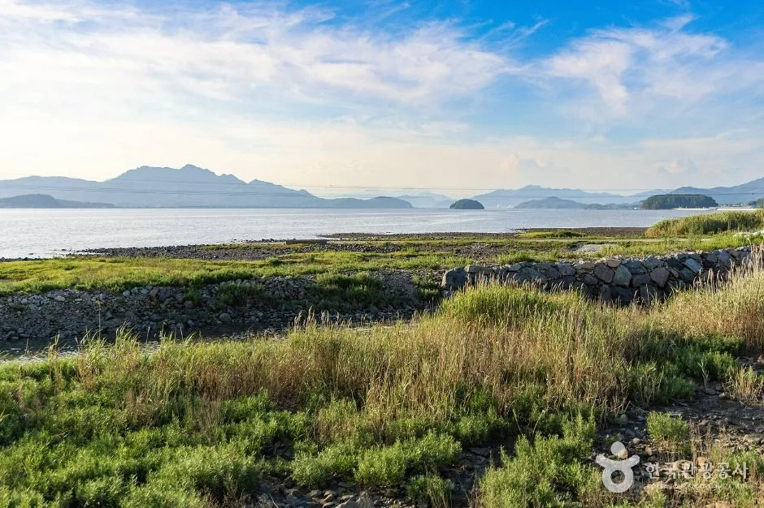
▲ 강진만 생태공원 가장자리의 갯벌과 갈대, 멀리 섬이 보인다(촬영 시점은 확인하지 못함). 사진=한국관광공사, 이전 회차 사진 포함 가능
| 항목 | 내용 |
|---|---|
| 회차·기간 | 제11회, 2026년 10월 24일(토)~11월 1일(일), 9일간 |
| 장소 | 강진만 생태공원 일원(강진군 강진읍) |
| 내비 주소(한국관광공사 TourAPI) | 강진읍 생태공원길 47 |
| 생태공원 주소(강진군 누리집) | 강진읍 남포리 510, 문의 061-430-5386 |
| 주최 | 강진군, 축제추진위원회 |
| 축제 문의 | 061-430-3358(강진군 누리집), 061-430-3413(한국관광공사 등록) |
| 공식 누리집 | gangjin.go.kr/culture/festival/gangjinman_reed |
| 입장료 | 확인하지 못함(이전 회차 보도에서도 요금 언급 없음, 방문 전 공지 확인) |
| 일별 운영 시간 | 확인하지 못함 |
ℹ️ 같은 축제인데 주소가 두 가지인 이유
강진군 누리집은 생태공원 주소를 "남포리 510"으로, 한국관광공사 TourAPI는 축제 장소를 "강진읍 생태공원길 47"로 적는다. 내비에는 "강진만 생태공원"을 먼저 검색하고, 안 나오면 도로명 주소를 넣는 방법이 있다. 어느 쪽이 주차장 진입로에 정확히 맞는지는 확인하지 못했다.
한국관광공사 소개문에 따르면 이곳은 1,572종의 생물이 서식하는 생태공원이고, 축제는 생태탐방로 걷기와 갈대밭 관람, 어린이 참여형 체험을 앞세운다. 강진군 누리집은 버스킹과 공연, 갈대숲 생태 탐험, 힐링 캠프 피크닉 같은 활동을 소개한다.
2. 프로그램 — 확인된 것과 과거 사례
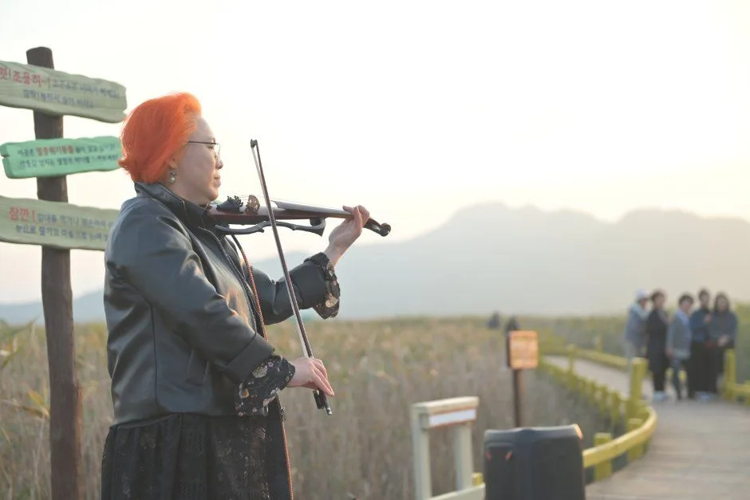
▲ 갈대밭 데크길 곁에서 열리는 소규모 공연. 해 질 무렵에 어울리는 구성이다. 사진=한국관광공사, 이전 회차 사진 포함 가능
10월 4일 기준 강진군 누리집 축제 페이지에서도 개막식 라인업과 일별 시간표는 확인하지 못했다. 강진군 누리집에 올라온 활동은 라이브·버스킹 공연, 비눗방울 마술과 솜사탕 공연, 어린이 뮤지컬, 갈대숲 생태 탐험, 야외 힐링 캠프다. 아래 표는 2026년 계획이 아니라 이전 회차 보도를 근거로 한 참고용이다.
| 구분 | 내용 | 근거 |
|---|---|---|
| 생태 체험 | 갈대로드 생태탐험대(생태해설사 동반), 자전거 여행 | 2024년 보도 |
| 이동 체험 | 황금빛 갈대 열차, 1인 5천원 | 2024년 보도 |
| 만들기 | 갈대 손수건, 에코 솜사탕, 갈대화관, 갈대네컷 | 2024~2025년 보도 |
| 어린이 | 키즈존, 댄스파티, 업사이클링(커피 찌꺼기 공예, 폐플라스틱 키링) | 2024~2025년 보도 |
| 기타 | 생태탐사 브이로그 공모전, 독서골든벨, 평생학습 한마당, 읍면 씨름대회 | 2025년 보도 |
| 공연 | 개막 공연, 갈대음악 콘서트, 가을 미니 콘서트 | 2024~2025년 보도 |
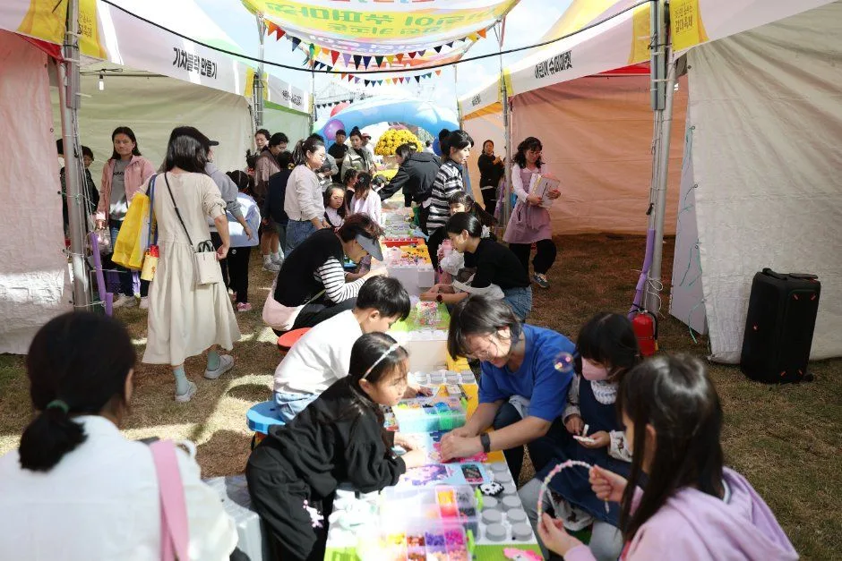
▲ 체험 천막 안은 가족 단위 방문객으로 붐빈다. 만들기류는 대기가 생길 수 있다. 사진=한국관광공사, 이전 회차 사진 포함 가능
3. 갈대는 언제 절정인가 — 순천만과 비교
갈대 절정 시기를 공식 수치로 발표한 자료는 확인하지 못했다. 축제 일정이 10월 말~11월 초에 맞춰져 있을 뿐, 갈대가 언제 가장 풍성한지는 확인하지 못했다. 순천만 갈대축제 역시 같은 10월 말~11월 초에 열리는 것으로 기존 기사에서 다뤘다.
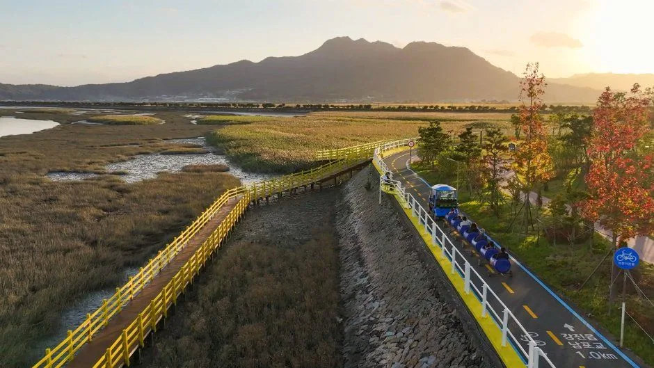
▲ 노란 난간의 데크길이 갈대밭과 갯벌 사이를 가른다. 이전 회차에서는 이 길을 달리는 열차가 운영됐다(2026 촬영본이 아닐 수 있음). 사진=한국관광공사, 이전 회차 사진 포함 가능
▲ 강진만 갯벌 가장자리의 풀밭과 먼 산. 한국관광공사 '강진만' 항목의 사진으로, 촬영 시기와 갈대 상태는 확인하지 못했다. 사진=한국관광공사
| 비교 항목 | 강진만 춤추는 갈대축제 | 순천만 갈대축제 |
|---|---|---|
| 기간 | 10/24~11/1, 9일 | 10월 말~11월 초(기존 기사 참고) |
| 관람 방식 | 생태공원 데크길 걷기, 축제장 체험·공연 | 국가정원·습지 연계, 용산전망대, PRT 이용 |
| 개막 이틀 인파 | 2025년 약 5만 1천 명(전년 4만 8천 명, 6% 증가) | 해당 수치 확인하지 못함 |
| 전체 기간 인파 | 확인하지 못함 | 약 100만 명 전망(자사 기존 기사, 공식 확정 아님) |
| 이동 병목 | 2024년 주차장 5곳 정오 무렵 만차, 셔틀 운행(2024년 보도) | 용산전망대 만차 시 도보 약 30분 |
| 성격 | 가족 체험·공연 중심, 갯벌과 바다 풍경 | 대규모 습지·전망 중심 |
순천만의 병목 구조와 일몰 시각 타이밍은 순천만 갈대축제 혼잡 타이밍 기사에 정리해 두었다. 강진은 순천만보다 규모가 작지만, 2024년에는 5개 주차장이 정오 무렵 모두 찼다는 보도가 있어 오전 도착이 중요하다.
4. 자차 접근 — 내비 목적지와 주차
ℹ️ 2026 주차·셔틀 운영안은 확인하지 못했다
10월 4일 기준 강진군 누리집과 검색 가능한 보도에서 올해 주차장 위치와 수용 대수, 요금, 셔틀 노선은 찾지 못했다. 아래 내용은 2024년 주차·셔틀 보도와 2025년 인파 보도에서 확인되는 사실이며, 올해 동일하다고 단정할 수 없다. 출발 전 강진군(061-430-3358)에 확인하자.
| 항목 | 내용 | 출처 시점 |
|---|---|---|
| 주차장 | 5개 주차장 운영, 정오 무렵 모두 만차 | 2024년 개막 첫 주말 |
| 차량 통제 | 입출차로 일방통행 통제, 추가 병렬주차 | 2024년 |
| 셔틀버스 | 주말 셔틀버스 4대 상시 운행 | 2024년 |
| 2025년 상황 | 개막 이틀 약 5만 1천 명 방문(전년 4만 8천 명 대비 6% 증가). 주차·셔틀 관련 보도는 확인하지 못함 | 2025년 개막 주말 |
| 주차 요금 | 확인하지 못함 | - |
| 2026 셔틀 노선·정류장 | 확인하지 못함 | - |
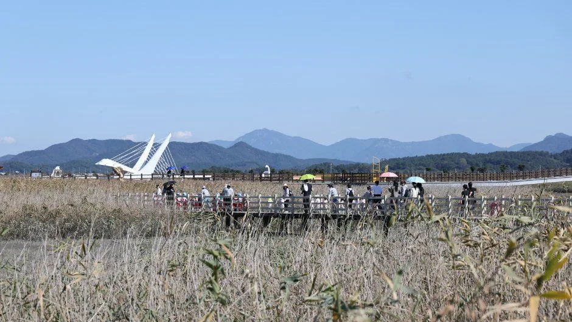
▲ 탐방로 끝으로 흰색 구조물의 다리가 보인다. 주차 후 이 길까지 걸어 들어가는 동선이다. 사진=한국관광공사, 이전 회차 사진 포함 가능
✅ 자차 접근 요령
· 내비는 "강진만 생태공원" 또는 "강진읍 생태공원길 47"
· 주말 오전 이른 시간 도착이 안전하다. 2024년 개막 첫 주말에는 정오 무렵 모두 찼다는 보도가 있고, 2025년은 인파 보도만 확인된다
· 만차 시 임시 주차와 셔틀을 이용하게 될 가능성이 높다(올해 안내는 미확인)
· 진입로 일방통행이 걸릴 수 있어, 현장 안전요원 안내를 따르자
· 평일은 주말보다 한산할 가능성이 크지만 공식 통계는 확인하지 못했다
5. 혼잡 시간대 — 보도로 읽는 흐름
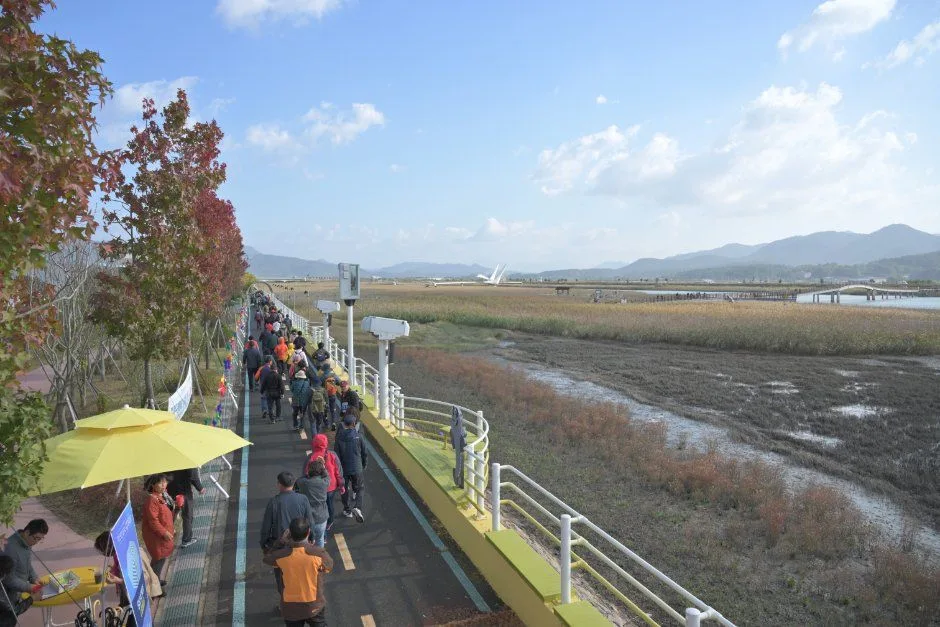
▲ 산책로는 폭이 넓지 않아 인파가 몰리면 걷는 속도가 느려진다. 사진=한국관광공사, 이전 회차 사진 포함 가능
| 시점 | 상황 | 근거 |
|---|---|---|
| 개막 첫 주말 정오 전후 | 주차장 만차, 일방통행 통제 | 2024년 보도 |
| 개막 이틀 | 방문객 약 5만 1천 명(주차 상황은 확인하지 못함) | 2025년 보도 |
| 2024년 첫날 | 방문객 2만 8천여 명(전년 대비 41% 증가) | 2024년 보도 |
| 평일·후반부 | 상대적으로 한산할 것으로 보이나 확인된 자료 없음 | 추정 |
방문객이 해마다 늘었다는 점(2024년 첫날 41% 증가, 2025년 개막 이틀 6% 증가)을 보면 올해도 개막 주말인 24~25일이 가장 붐빌 가능성이 높다. 이는 추정이다. 사람을 피하려면 월요일~목요일이나 두 번째 주말 오전을 노려볼 만하다.
6. 석양과 야간 — 언제 가면 좋은가
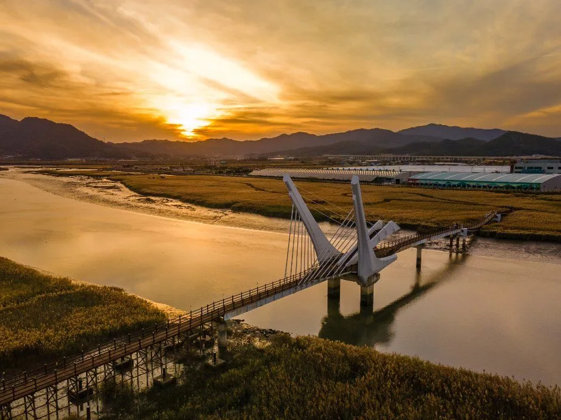
▲ 한국관광공사 소개문도 "아름다운 석양"을 축제의 매력으로 꼽는다. 사진=한국관광공사, 이전 회차 사진 포함 가능
한국관광공사 소개문은 생태공원의 석양을 축제의 핵심 풍경으로 든다. 공식 일몰 시각은 확인하지 못했다. 10월 하순에서 11월 초로 가면 일몰이 빨라지는 것이 일반적이므로, 해 질 무렵을 노린다면 일몰 한 시간 전쯤 도착하는 편이 낫다. 정확한 시각은 출발 당일 지도 앱으로 확인하자.
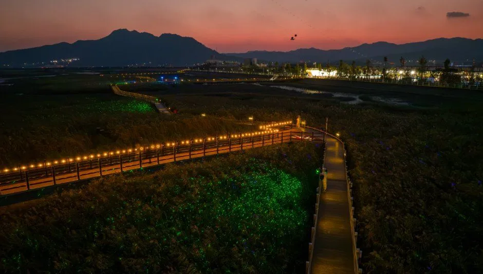
▲ 어두워진 뒤에는 데크길 조명이 길을 밝힌다. 야간 개방 시간은 확인하지 못했다. 사진=한국관광공사, 이전 회차 사진 포함 가능
7. 강진 연계 코스 — 갈대만 보고 돌아가기 아쉬울 때
가우도 출렁다리, 다산초당, 백련사는 기존 기사에서 요금과 동선까지 정리했다. 이 글에서는 반복하지 않고 갈대축제와 어떻게 묶을지만 짚는다. 자세한 내용은 강진 가우도·다산초당·백련사 자차 하루 코스를 참고하면 된다.
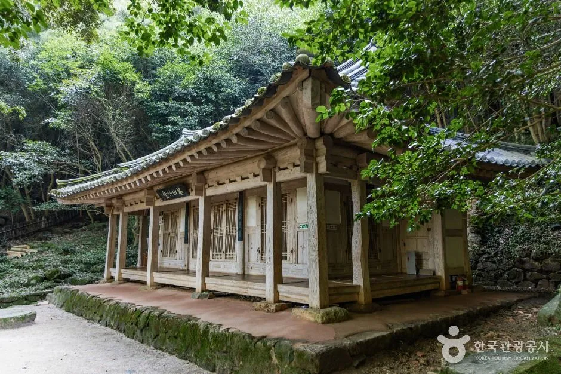
▲ 다산초당 경내의 건물. 갈대축제와 같은 날 묶기 좋은 연계지다(촬영 시기 미확인). 사진=한국관광공사
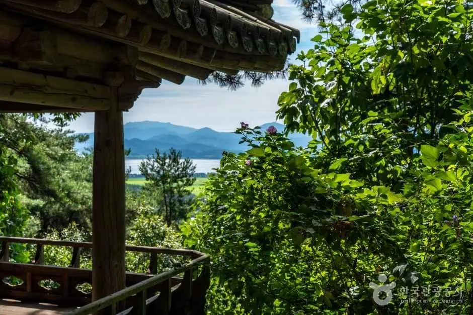
▲ 다산초당 일대에서는 숲 사이로 강진만이 내려다보인다(촬영 시기 미확인). 사진=한국관광공사
| 시간대 | 동선 | 비고 |
|---|---|---|
| 오전 | 갈대축제장 먼저 도착해 주차 확보, 데크길 산책 | 만차 이전 도착 중요 |
| 점심 | 강진읍 시내 식사 | 식당 정보는 별도 확인 필요 |
| 오후 | 가우도 또는 다산초당·백련사 중 한 곳 | 기존 기사에서 동선 확인 |
| 해 질 무렵 | 다시 생태공원으로 와서 석양 감상 | 재진입 시 주차 상황 미확인 |
| 연계지 | 직선거리 | 비고 |
|---|---|---|
| 다산초당(도암면 다산초당길 68-35) | 약 5km | 실제 주행 시간은 내비로 확인 |
| 가우도(모노레일 승강장 가우도길 2-87 기준) | 약 10km | 출렁다리 운영·요금은 기존 기사 참고 |
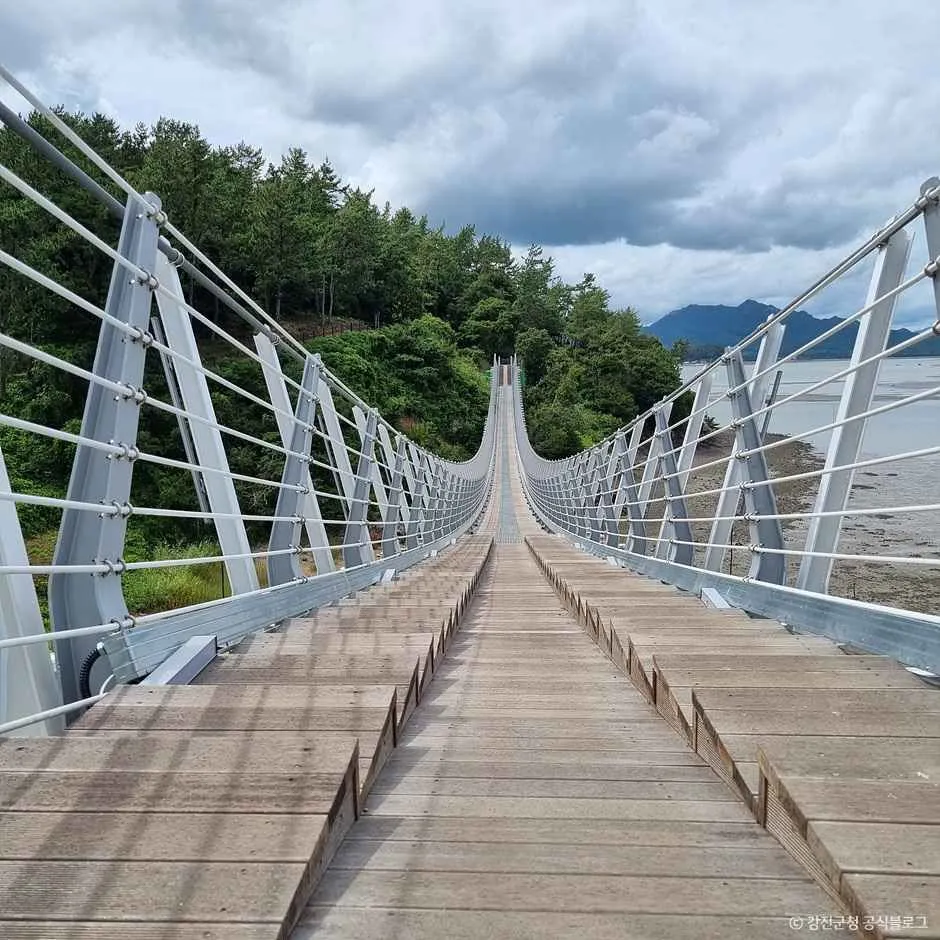
▲ 가우도 보행교의 모습(촬영 시기 미확인). 사진=한국관광공사
아침 일찍 갈대, 오후에는 기존 코스 한 곳이라는 구성이 현실적이다. 하루가 부족하다면 인근 해남의 달마산 도솔암 가이드를 더해 1박 코스로 늘리는 방법도 있다.
ℹ️ 소상공인 SNS 리뷰이벤트도 같이 진행
강진군은 갈대축제에 맞춰 10월 한 달 "SNS 내돈내산 리뷰이벤트"를 확대 운영한다는 보도가 있다. 1만 원 이상 결제 영수증과 점포 이용 사진, 축제 홍보물 사진 등을 SNS에 올리면 모바일 상품권 5천 원을 최대 4회 받을 수 있고, 우수 후기 50명은 1만 원을 더 받는 구조(최대 3만 원)다. 참가 조건 세부는 군 공고를 확인하자.
✅ 출발 전 체크리스트
· 일정 10/24(토)~11/1(일), 9일간, 강진만 생태공원
· 내비: 강진읍 생태공원길 47 또는 "강진만 생태공원"
· 주차: 올해 운영안 미확인, 2024년 정오 무렵 만차 보도
· 문의: 강진군 061-430-3358
· 입장료·주차 요금·셔틀 노선은 방문 전 공식 공지 확인
8. 요약
제11회 강진만 춤추는 갈대축제는 2026년 10월 24일부터 11월 1일까지 9일간 강진만 생태공원 일원에서 열린다. 일정은 강진군 누리집과 지역 언론에서 일치한다.
자차 방문의 핵심은 오전 일찍 도착하는 것이다. 2024년 개막 첫 주말에는 정오 무렵 주차장이 가득 찼고 셔틀 4대가 운행됐다는 보도가 있으며, 2025년은 개막 이틀 5만 명 넘는 인파만 확인된다. 2026년 주차장 수용 규모, 요금, 셔틀 노선, 입장료, 일별 프로그램 시간표, 갈대 절정 공식 시기는 확인하지 못했으므로 강진군에 문의하자. 순천만과 비교하면 규모가 작고 가족 체험 중심이라, 가우도·다산초당 같은 기존 코스와 나눠 하루를 쓰기 좋다.